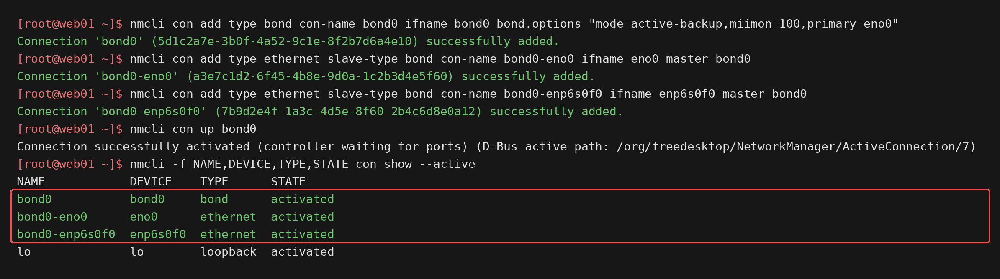
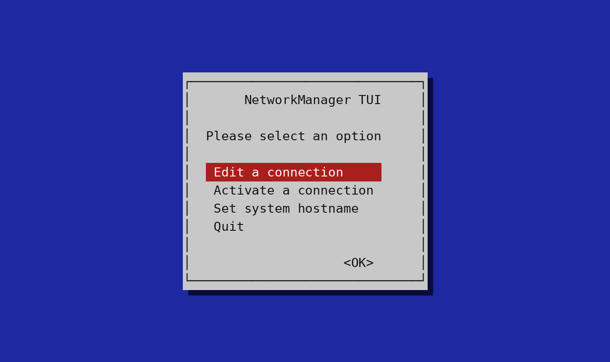
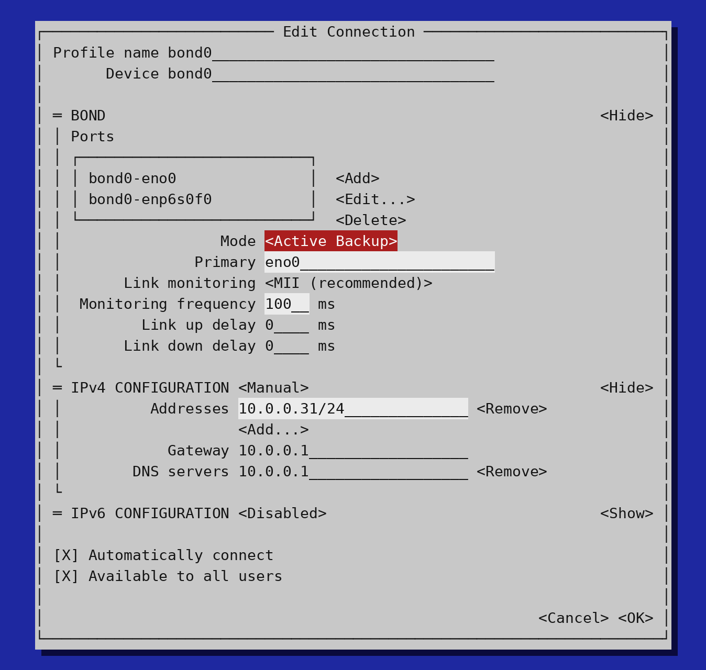
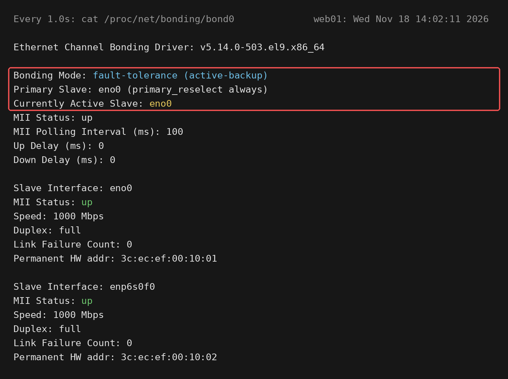
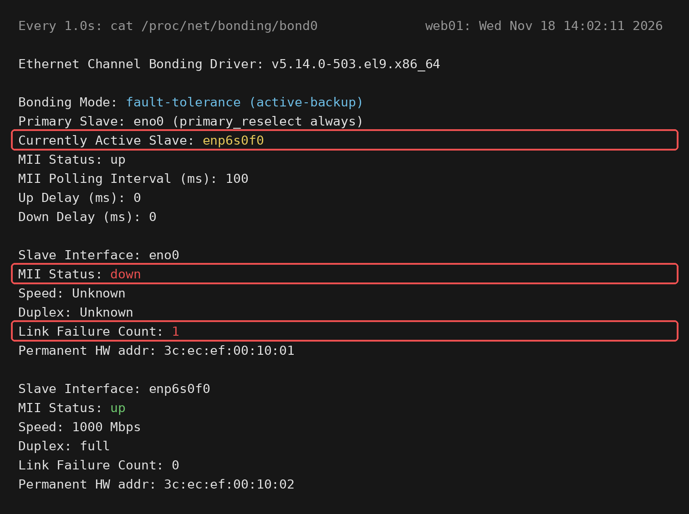
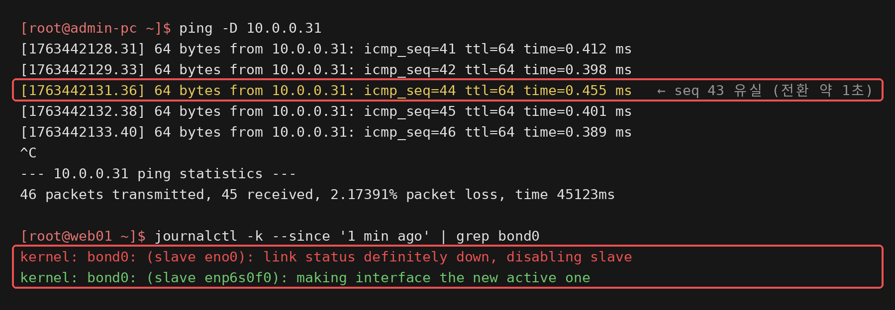
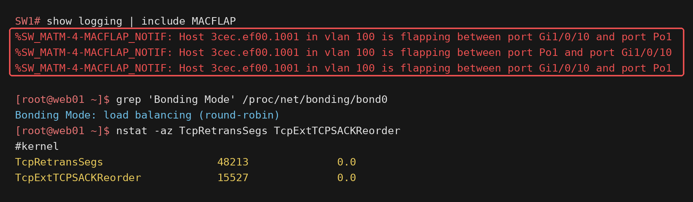

OS & 시스템 관리
네트워크 본딩 (bond0) 구성 — nmcli · nmtui
NIC 두 개를 bond0 하나로 묶어 한쪽 링크가 끊겨도 통신이 이어지도록 구성한 방법입니다. 라운드로빈 모드에서 겪은 세션 끊김의 원인과, 스위치 이중화 환경에서의 올바른 설정도 정리했습니다.
1. 구성
┌──────────── bond0 (10.0.0.31/24) ────────────┐
│ │
eno0 (primary) enp6s0f0 (backup)
│ │
[ SW1 Gi1/0/10 ] ════ 스위치 간 연결(Po1) ════ [ SW2 Gi2/0/10 ]
└───────────────── 게이트웨이 10.0.0.1 ──────────────┘| OS | Rocky Linux 9 (NetworkManager) |
|---|---|
| 본딩 | bond0 — 포트 eno0, enp6s0f0 |
| 모드 | active-backup, primary eno0, MII 감시 100ms |
| IP | 10.0.0.31/24, GW 10.0.0.1 |
| 스위치 | 두 NIC를 서로 다른 스위치(SW1, SW2)에 연결해 스위치 장애까지 대비 |
2. 모드 선택: active-backup vs 라운드로빈
| 모드 | 동작 | 스위치 설정 |
|---|---|---|
0 balance-rr | 패킷을 포트에 번갈아 전송 | 필요 (정적 EtherChannel) |
1 active-backup | 한 포트만 사용, 장애 시 다른 포트로 전환 | 불필요 |
2 balance-xor | 해시로 포트 고정 분산 | 필요 (정적 EtherChannel) |
4 802.3ad | LACP로 스위치와 협상해 흐름별 분산 | 필요 (LACP) |
5 balance-tlb / 6 balance-alb | 송신(alb는 수신도) 분산 | 불필요 |
| active-backup (mode 1) | 라운드로빈 (mode 0) | |
|---|---|---|
| 장점 | • 스위치 설정 없이 동작 • 서로 다른 스위치에 연결해도 안전 • 동작이 단순해 장애 분석이 쉬움 | • 두 포트 대역폭을 합쳐 단일 흐름도 1Gbps 이상 가능 • 포트가 모두 사용됨 |
| 단점 | • 한 포트는 대기만 함 (대역폭 = 1포트) | • 스위치가 포트를 하나로 묶어줘야 함 • 패킷 순서가 뒤바뀌어 TCP 재전송 증가 • 스위치가 따로 놀면 MAC 플래핑과 세션 끊김 |
| 적합한 곳 | 일반 서버, 스위치 이중화 환경 | 같은 스위치(또는 스택)에 연결한 대역폭 위주 구성 |
3. 구성 방법 A: nmcli
# 1) bond0 생성 (모드·감시 주기·주 포트)
nmcli con add type bond con-name bond0 ifname bond0 \
bond.options "mode=active-backup,miimon=100,primary=eno0"
# 2) 포트 연결 (RHEL 9 계열은 'port-type bond controller bond0' 표기도 가능)
nmcli con add type ethernet slave-type bond con-name bond0-eno0 ifname eno0 master bond0
nmcli con add type ethernet slave-type bond con-name bond0-enp6s0f0 ifname enp6s0f0 master bond0
# 3) IP 설정
nmcli con mod bond0 ipv4.method manual ipv4.addresses 10.0.0.31/24 \
ipv4.gateway 10.0.0.1 ipv4.dns 10.0.0.1 ipv6.method disabled
# 4) 기존 단일 NIC 프로필은 자동 연결 해제 후 bond0 활성화
nmcli con mod eno0 connection.autoconnect no
nmcli con mod enp6s0f0 connection.autoconnect no
nmcli con up bond0
SSH 원격 적용용 스크립트 (자동 롤백)
#!/bin/bash
# bond0-setup.sh → 실행: nohup bash bond0-setup.sh > /root/bond0-setup.log 2>&1 &
# SSH 가 끊겨도 nohup 으로 끝까지 실행되고, 게이트웨이 응답이 없으면 원래대로 되돌림
GW=10.0.0.1
nmcli con add type bond con-name bond0 ifname bond0 \
bond.options "mode=active-backup,miimon=100,primary=eno0" \
ipv4.method manual ipv4.addresses 10.0.0.31/24 ipv4.gateway $GW \
ipv4.dns $GW ipv6.method disabled
nmcli con add type ethernet slave-type bond con-name bond0-eno0 ifname eno0 master bond0
nmcli con add type ethernet slave-type bond con-name bond0-enp6s0f0 ifname enp6s0f0 master bond0
nmcli con mod eno0 connection.autoconnect no
nmcli con mod enp6s0f0 connection.autoconnect no
nmcli con up bond0
sleep 10
if ping -c 3 -W 2 $GW >/dev/null; then
echo "[OK] bond0 적용 완료"
else
echo "[ROLLBACK] 게이트웨이 응답 없음 → 기존 설정으로 복구"
nmcli con delete bond0 bond0-eno0 bond0-enp6s0f0
nmcli con mod eno0 connection.autoconnect yes
nmcli con up eno0
fiWindows에서 작성한 스크립트는 줄바꿈이 CRLF라 $'\r': command not found 오류가 납니다. 서버에 올린 뒤 dos2unix bond0-setup.sh로 변환하고 실행합니다.
4. 구성 방법 B: nmtui
화면에서 메뉴를 고르는 방식이라 명령어를 외우지 않아도 되고, 원격 콘솔에서 작업할 때 편합니다.
nmtui실행 → Edit a connection- <Add> → 유형 Bond 선택
- Profile name, Device를
bond0로 입력 - Ports의 <Add> → Ethernet → Device
eno0, 같은 방법으로enp6s0f0추가 - Mode Active Backup, Primary
eno0, Link monitoring MII, 주기100ms - IPv4 CONFIGURATION을 Manual로 바꾸고 주소·게이트웨이·DNS 입력, IPv6는 Disabled
- <OK> → 기존
eno0,enp6s0f0프로필은 편집에서 Automatically connect 해제 - Activate a connection에서
bond0활성화


5. 적용 확인
nmcli -f NAME,DEVICE,TYPE,STATE con show --active
ip -br addr show bond0
cat /proc/net/bonding/bond0
6. SSH 접속 중 본딩 상태 실시간 확인
/proc/net/bonding/bond0는 커널이 본딩 상태를 그대로 보여주는 파일입니다. watch로 1초마다 다시 읽으면, SSH 접속을 유지한 채 전환 과정을 볼 수 있습니다.
# 전체 상태 1초 간격 (-d: 바뀐 부분 강조)
watch -d -n 1 cat /proc/net/bonding/bond0
# 핵심 항목만
watch -d -n 1 "grep -E 'Currently Active|Slave Interface|MII Status|Link Failure' /proc/net/bonding/bond0"
# 커널 메시지로 전환 시점 확인
journalctl -kf | grep bond0장애 전환 시험
터미널을 세 개 띄워 두고(또는 tmux 화면 분할) 진행합니다.
- 터미널 1:
watch -d -n 1 cat /proc/net/bonding/bond0 - 터미널 2 (다른 PC):
ping -D 10.0.0.31로 유실 구간 측정 - 터미널 3: 활성 포트를 끊음 →
ip link set eno0 down또는 케이블 분리·스위치 포트 shutdown - 확인 후 복구:
ip link set eno0 up→ primary가 eno0라 다시 eno0로 돌아옴


ip link set eno0 up으로 되돌립니다.7. 라운드로빈에서 세션이 끊긴 원인과 해결
증상
처음에는 대역폭을 늘리려고 balance-rr로 구성했는데, SSH와 웹 세션이 간헐적으로 끊기고 응답이 느려졌습니다. active-backup으로 바꾸자 증상이 사라졌습니다.
원인: 스위치가 두 포트를 하나로 묶지 못한 구성
- 라운드로빈은 같은 MAC 주소(bond0 MAC)로 패킷을 eno0, enp6s0f0에 번갈아 보냅니다.
- 두 NIC가 서로 다른 스위치(SW1, SW2)에 연결되어 있고 스위치끼리 포트를 하나로 묶지 않았다면, SW1 입장에서는 같은 MAC이 자기 포트(Gi1/0/10)와 SW2 쪽 연결(Po1)을 계속 오가는 것으로 보입니다. 이것이 MAC 플래핑입니다.
- 스위치의 MAC 주소 테이블이 계속 바뀌면서 서버로 돌아오는 패킷이 엉뚱한 경로로 가거나 버려집니다. 스위치에 따라서는 루프로 판단해 포트를 잠시 막기도 합니다.
- 여기에 라운드로빈 자체의 특성으로 패킷 도착 순서가 뒤바뀌어 TCP 재전송이 크게 늘고, 결국 세션 타임아웃으로 이어집니다.

즉 "스위치 이중화 때문"이라는 판단이 맞습니다. 정확히는 스위치가 이중화되어 있는데 두 스위치가 서버 포트를 하나의 논리 포트로 묶지 않은 상태에서 라운드로빈을 쓴 것이 원인입니다.
해결 1: active-backup (적용한 방법)
한 번에 한 포트만 쓰므로 MAC이 한 스위치에서만 보입니다. 스위치 설정 없이 스위치 장애까지 대비할 수 있어, 이중화 스위치 환경에서 가장 안전한 선택입니다.
해결 2: 스위치를 묶을 수 있다면 — 라운드로빈 대신 LACP
두 스위치가 스택(StackWise, Virtual Chassis, IRF 등)이나 MLAG(vPC, MC-LAG 등)으로 하나처럼 동작한다면, 서로 다른 스위치의 포트를 하나의 포트 채널로 묶을 수 있습니다.
! Cisco 스택 예시 (SW1 = 멤버1, SW2 = 멤버2)
interface range GigabitEthernet1/0/10 , GigabitEthernet2/0/10
switchport mode access
switchport access vlan 100
channel-group 10 mode active ! LACP → 서버 mode=802.3ad (권장)
! channel-group 10 mode on ! 정적 → 서버 mode=balance-rr / balance-xor
!
interface Port-channel10
switchport mode access
switchport access vlan 100
! 확인: 두 포트가 (P) = 묶임 상태여야 함
show etherchannel 10 summary# 서버: LACP 모드로 변경
nmcli con mod bond0 bond.options "mode=802.3ad,miimon=100,lacp_rate=fast,xmit_hash_policy=layer3+4"
nmcli con up bond0
# 확인: 두 포트의 Aggregator ID 가 같아야 정상
grep -E "Bonding Mode|Aggregator ID|Slave Interface" /proc/net/bonding/bond0- 라운드로빈 대신 LACP를 권장하는 이유: 스위치를 제대로 묶어도 라운드로빈은 패킷 순서가 뒤바뀌는 문제가 남습니다. LACP는 흐름(세션)마다 한 포트를 쓰므로 순서가 지켜지고, 스위치와 링크 상태를 주고받아 잘못된 연결도 감지합니다.
xmit_hash_policy=layer3+4: IP와 포트 기준으로 분산해, 여러 세션이 있을 때 두 포트를 고르게 씁니다. 세션 하나의 속도는 포트 하나의 속도를 넘지 않습니다.
해결 3: 스위치를 묶을 수 없다면
| 상황 | 선택 |
|---|---|
| 독립 스위치 2대, 안정성 우선 | active-backup |
| 독립 스위치 2대, 대역폭도 일부 활용 | balance-alb(mode 6): 스위치 설정 없이 송수신 분산 |
| 스택·MLAG 구성 가능 | 802.3ad(LACP) + 스위치 포트 채널 |
| 단일 스위치 | 802.3ad 권장 (라운드로빈은 순서 문제로 비권장) |
8. 트러블슈팅
| 증상 | 원인 및 해결 |
|---|---|
| bond0는 올라왔는데 통신 안 됨 | 기존 eno0 프로필이 같은 IP로 함께 떠 있음 → 기존 프로필 autoconnect 해제 후 down |
포트 하나가 MII Status: down | 케이블·스위치 포트 확인, ethtool eno0로 Link detected 확인 |
| 802.3ad인데 한 포트만 사용 | 두 포트의 Aggregator ID가 다름 → 스위치 포트 채널 미구성 또는 LACP 모드 불일치 |
| 복구 후 primary로 안 돌아옴 | primary_reselect 값 확인 (기본 always) |
스크립트 실행 시 $'\r' 오류 | Windows 줄바꿈 → dos2unix |
| 라운드로빈에서 세션 끊김 | 7번 참고: 스위치 포트 채널 구성 또는 모드 변경 |